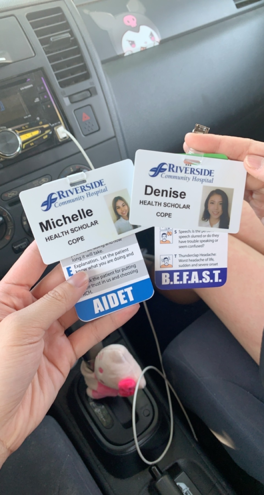
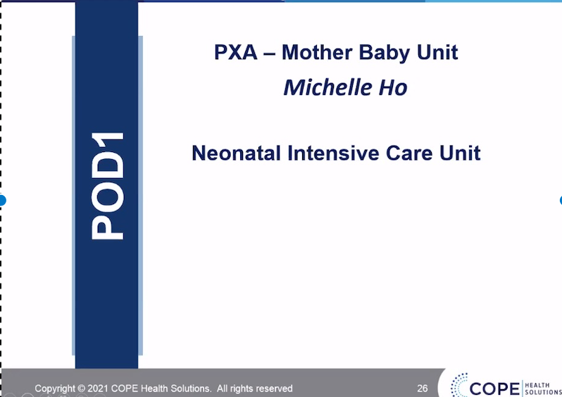
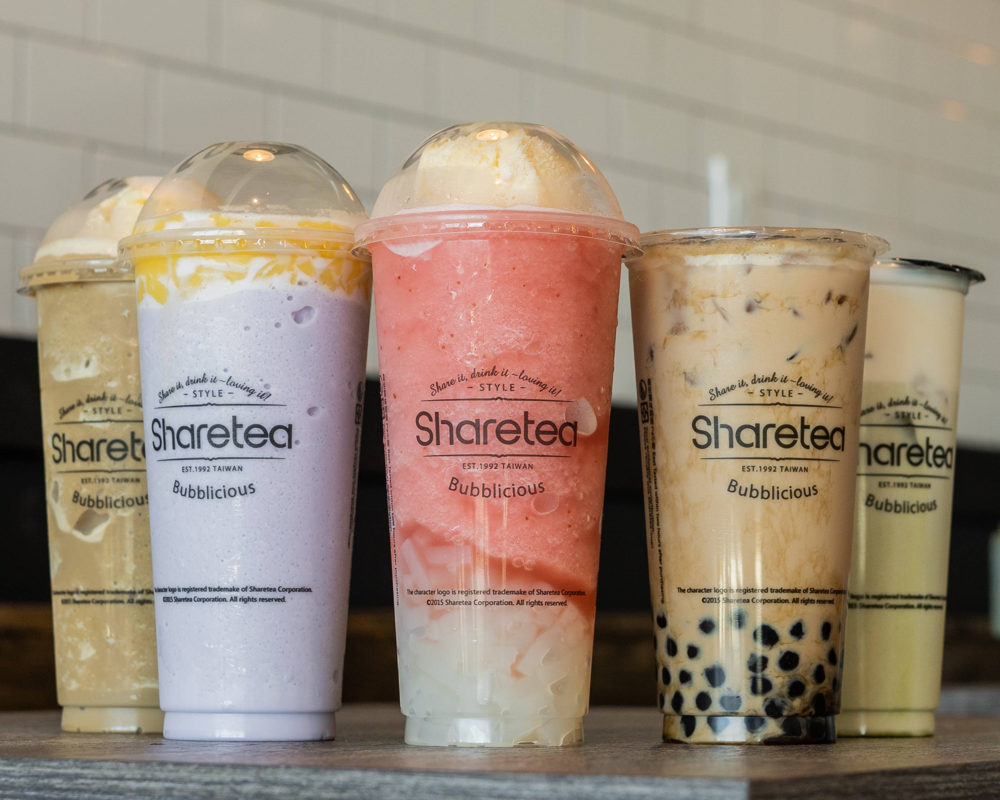
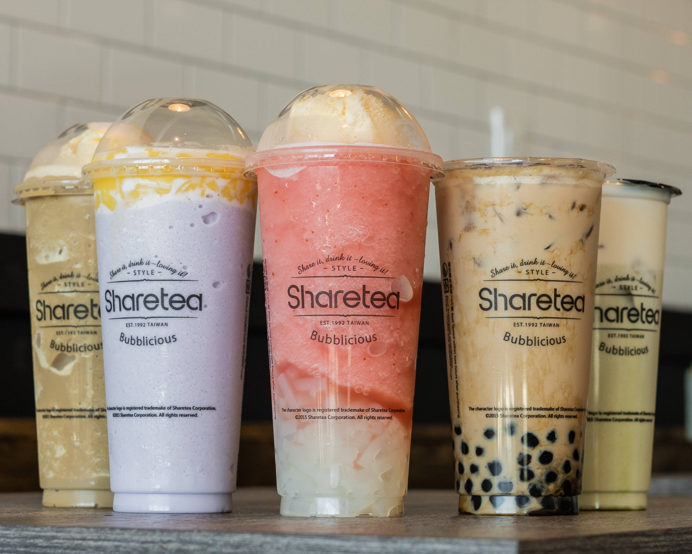
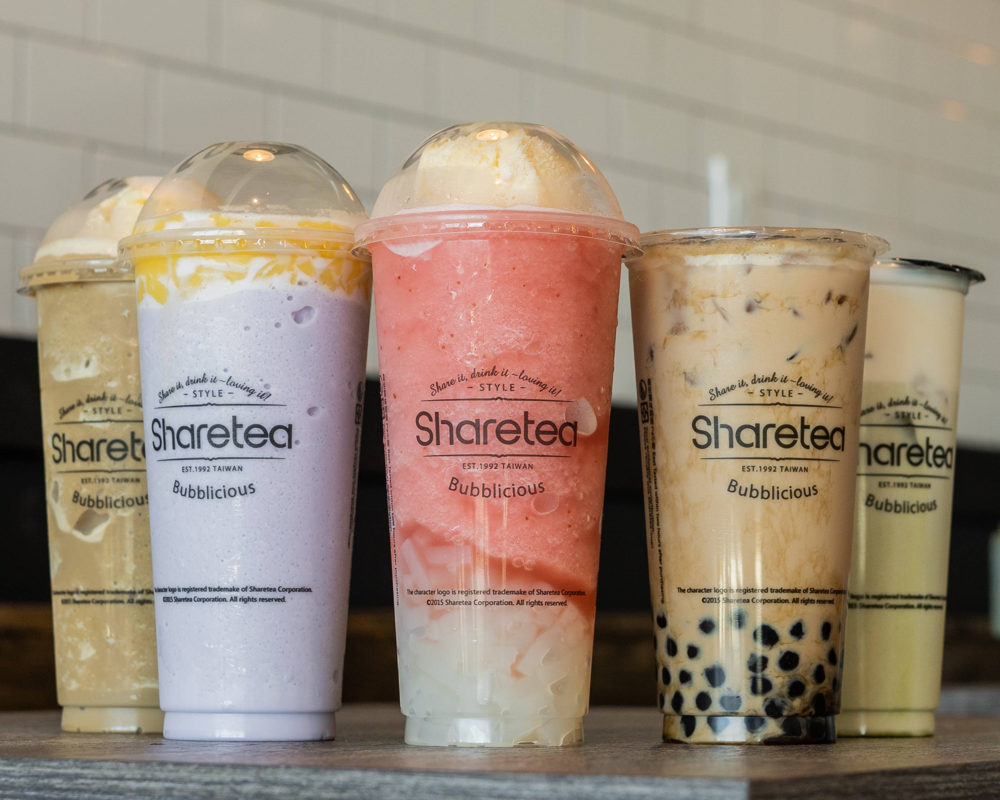

Michelle Ho
My name is Michelle Ho. I am currently a fourth year at University of California- Riverside as a Biology major. I plan to graduate with my B.S. in Biology and continue on to Physician Assistant school. Throughout my years in undergrad, I have enjoyed many different experiences, such as networking with others to being able to explore my major. I have taken courses that are also unrelated to my major to expand my knowledge on other subjects. During my undergrad, I was able to work different jobs and volunteer. Even though some of my job experiences do not relate to my career path, I was able to connect with customers and show this compassion that I would in the hospital. Working in the food service taught me to interact with other people and learn how to be passionate
Growing up, I have always wanted to be in the medical field or showed interest in the medical field. The medical field offers so much, and I am able to choose any field within medical. With experiences in volunteering at the hospital, I got to learn and witness a lot of situations. One of my favorite departments was Emergency Room, in which I was able to help with EKGs, witness traumas, and see how the team worked with patients. While working inside the Emergency Room, I got to assist Physician Assistants, Registered Nurses, and Medical Doctors. Connecting and networking with different people at the hospital, I was able to gain the knowledge of each position of interest.
I hope to gain more experience within the next year and apply to Physician Assistant school. Although there are many different fields or departments within PA, I am most interested in either Emergency Department or Pediatrics.
Experience
Server
• Helped take orders for in store and takeout
• Served fresh seafood and drinks
• Experience with customer service
COPE Health Scholar
• Assisted patients in different departments
• Learned how to deal with different patients
• Created a safe and comforting environment for patients
Education
UC Riverside
Portfolio


 

